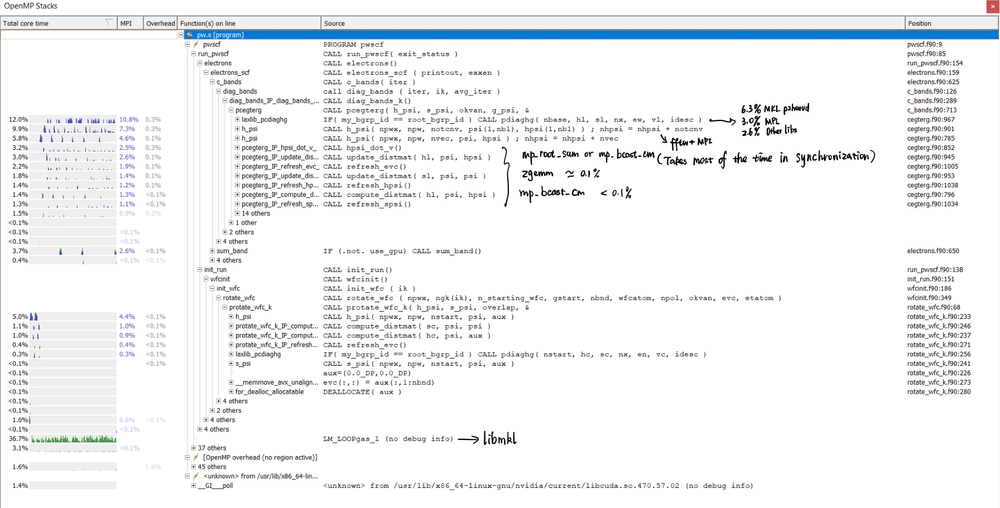

Quantum Espresso
https://github.com/QEF/q-e
compile
Could not find MPI (Missing MPI_FORTRAN_FOUND)
solve: -DMPIEXEC_EXECTUABLE=${MPI_HOME}/bin/mpiexec
The compiled version does not support OpenMP and only support up to 4 processes for MPI.
Add the options:
-DQE_ENABLE_OPENMP=ON
-DCMAKE_Fortran_COMPILER=${MPI_HOME}/bin/mpifort
-DOpenMP_C_FLAGS=-fopenmp=lomp
-DOpenMP_CXX_FLAGS=-fopenmp=lomp
-DOpenMP_C_LIB_NAMES=libomp
-DOpenMP_CXXLIB_NAMES=libomp
-DOpenMP_libomp_LIBRARY=/usr/lib/x86_64-linux-gnu/libomp.so.5
Change Toolchain to System.
Add -g to CMakeList.txt to get additional debug information.
set(CMAKE_CXX_FLAGS -g)
set(CMAKE_C_FLAGS -g)
set(CMAKE_Fortran_FLAGS -g)
https://www.quantum-espresso.org/Doc/user_guide/
library configure: https://www.quantum-espresso.org/Doc/user_guide/node11.html
test
In directory /q-e/test-suite/, use make run-tests to test the correctness of basic functionalities.
run
spack load ucx/gji
/home/qe/q-e/bin/pw.x
To control the number of processors in each group, command line switches: -nimage, -npools, -nband, -ntg, -ndiag or -northo (shorthands, respectively: -ni, -nk, -nb, -nt, -nd) are used. As an example consider the following command line:
mpirun -np 4096 ./neb.x -ni 8 -nk 2 -nt 4 -nd 144 -i my.input This executes a NEB calculation on 4096 processors, 8 images (points in the configuration space in this case) at the same time, each of which is distributed across 512 processors. k-points are distributed across 2 pools of 256 processors each, 3D FFT is performed using 4 task groups (64 processors each, so the 3D real-space grid is cut into 64 slices), and the diagonalization of the subspace Hamiltonian is distributed to a square grid of 144 processors (12x12).
mpirun -np 24 -x PATH --oversubscribe -x OMP_NUM_THREADS=4 -x LD_LIBRARY_PATH=/opt/nonspack/ucx-1.10.0-gcc/lib --allow-run-as-root /home/qe/q-e/bin/pw.x < ./ausurf.in
First run with 24 processes and 4 thread each:

Problem: OMP threads can only use up to 200% CPU per process even with 256 threads per process.
Analyze
Static Analysis
Using lizard
Fortran:
Total nloc Avg.NLOC AvgCCN Avg.token Fun Cnt Warning cnt Fun Rt nloc Rt
599949 54.1 10.6 569.7 9939 1693 0.17 0.58
C:
Total nloc Avg.NLOC AvgCCN Avg.token Fun Cnt Warning cnt Fun Rt nloc Rt
52039 152.5 3.0 1050.3 323 19 0.06 0.53
Python:
Total nloc Avg.NLOC AvgCCN Avg.token Fun Cnt Warning cnt Fun Rt nloc Rt
8864 18.3 5.0 146.0 298 21 0.07 0.26
Profiling result
All the GPU versionn test case seems to have IEEE underflow, trigger by the FFTlib, which should be fixed. Since the developing team of this project still aggressively develop the application to tailor to GPU.
We chose to use a case called si.scf.david.in to profile on single GPU. And here's the profiling result.
=117847== Profiling application: /home/qe/bin/pw.x -i ./si.scf.david.in
==117847== Profiling result:
Type Time(%) Time Calls Avg Min Max Name
GPU activities: 8.72% 22.118ms 140 157.98us 157.82us 159.81us usnldiag_collinear_79_gpu
6.46% 16.390ms 1360 12.051us 11.840us 189.41us init_us_2_base_gpu_216_gpu
5.29% 13.411ms 10 1.3411ms 1.3407ms 1.3417ms rotate_wfc_k_gpu_146_gpu
4.24% 10.763ms 370 29.090us 28.704us 32.928us ylmr2_gpum_ylmr2_gpu_kernel_
3.71% 9.4250ms 1127 8.3620us 6.5280us 17.664us volta_zgemm_32x32_nn
3.23% 8.1880ms 1224 6.6890us 6.5920us 7.1040us init_us_2_base_gpu_220_gpu
2.68% 6.8026ms 680 10.003us 9.8560us 10.784us init_us_2_base_gpu_185_gpu
2.67% 6.7818ms 340 19.946us 19.744us 21.280us init_us_2_base_gpu_206_gpu
2.61% 6.6090ms 340 19.438us 19.295us 21.504us init_us_2_base_gpu_158_gpu
2.46% 6.2396ms 689 9.0560us 7.2000us 14.432us void zgemm_largek_warp<bool=1, bool=0, bool=1, bool=0, int=3, int=3, int=4, int=3, int=2, int=2, int=9>(double2*, double2 const *, double2 const *, int, int, int, int, int, int, double2 const *, double2 const *, double2, double2, int, int, int*, int*)
2.28% 5.7953ms 159 36.448us 19.392us 43.200us cegterg_gpu_493_gpu
2.20% 5.5704ms 1104 5.0450us 4.1600us 11.488us void composite_2way_fft<unsigned int=20, unsigned int=4, unsigned int=32, padding_t=0, twiddle_t=0, loadstore_modifier_t=2, unsigned int=5, layout_t=1, unsigned int, double>(kernel_arguments_t<unsigned int>)
2.17% 5.4956ms 478 11.497us 11.359us 12.864us add_vuspsi_k_gpu_242_gpu
1.98% 5.0265ms 239 21.031us 10.208us 40.384us vloc_psi_k_gpu_464_gpu
1.86% 4.7254ms 219 21.577us 12.319us 33.824us void sytd2_upper_cta<double2, double, int=4>(int, double2*, unsigned long, double*, double*, double2*)
1.71% 4.3307ms 219 19.774us 19.743us 20.960us laxlib_cdiaghg_gpu_349_gpu
1.64% 4.1660ms 239 17.430us 17.248us 19.488us vloc_psi_k_gpu_477_gpu
1.48% 3.7585ms 1 3.7585ms 3.7585ms 3.7585ms force_corr_gpu_103_gpu
1.45% 3.6914ms 239 15.444us 15.264us 16.704us vloc_psi_k_gpu_456_gpu
1.40% 3.5579ms 2320 1.5330us 1.4080us 13.056us [CUDA memcpy DtoH]
1.36% 3.4570ms 219 15.785us 15.712us 16.352us laxlib_cdiaghg_gpu_317_gpu
1.34% 3.4099ms 159 21.445us 21.280us 23.136us g_psi_gpu_53_gpu
1.28% 3.2424ms 1979 1.6380us 1.2160us 13.120us [CUDA memcpy HtoD]
1.22% 3.0915ms 552 5.6000us 4.2880us 9.0560us void composite_2way_fft<unsigned int=20, unsigned int=4, unsigned int=16, padding_t=0, twiddle_t=0, loadstore_modifier_t=2, unsigned int=5, layout_t=0, unsigned int, double>(kernel_arguments_t<unsigned int>)
1.19% 3.0239ms 239 12.652us 10.816us 14.240us h_psi__gpu_158_gpu
1.14% 2.8893ms 219 13.193us 9.2160us 20.192us void trsm_ln_up_kernel<double2, unsigned int=32, unsigned int=32, unsigned int=4, bool=0>(int, int, double2 const *, int, double2*, int, double2, double2 const *, int, int*)
1.12% 2.8463ms 1095 2.5990us 2.4960us 3.2640us copy_info_kernel(int, int*)
1.06% 2.6975ms 170 15.867us 15.647us 16.544us init_us_2_base_gpu_119_gpu
1.02% 2.5845ms 40 64.612us 64.320us 72.960us stres_us_k_gpu_702_gpu
1.01% 2.5699ms 159 16.162us 16.096us 16.704us reorder_evals_cevecs_707_gpu
0.99% 2.5005ms 40 62.512us 62.240us 70.656us stres_us_k_gpu_817_gpu
0.97% 2.4644ms 159 15.499us 15.232us 16.576us cegterg_gpu_427_gpu
0.96% 2.4360ms 70 34.799us 34.720us 35.424us cegterg_gpu_265_gpu
0.89% 2.2453ms 40 56.131us 55.840us 63.040us stres_knl_gpu_100_gpu
0.86% 2.1855ms 40 54.636us 54.463us 56.832us stres_us_k_gpu_543_gpu
0.82% 2.0773ms 243 8.5480us 7.2320us 11.904us fft_scalar_cufft_cfft3d_gpu_586_gpu
0.82% 2.0749ms 280 7.4100us 7.3280us 7.8720us get_rho_gpu_954_gpu
0.80% 2.0350ms 212 9.5990us 9.4080us 10.016us dp_dev_memcpy_c2d_770_gpu
0.71% 1.7922ms 689 2.6010us 2.4960us 3.7440us void scal_kernel<double2, double2, int=1, bool=1, int=5, int=4, int=4, int=4>(cublasTransposeParams<double2>, double2 const *, double2*, double2 const *)
0.70% 1.7640ms 159 11.094us 10.912us 11.744us cegterg_gpu_376_gpu
0.67% 1.7032ms 508 3.3520us 3.1670us 4.4480us void reduce_1Block_kernel<double, int=128, int=7, cublasGemvTensorStridedBatched<double>, cublasGemvTensorStridedBatched<double>, cublasGemvTensorStridedBatched<double>>(double const *, double, double, int, double const *, double, cublasGemvTensorStridedBatched<double>, cublasGemvTensorStridedBatched<double>, cublasPointerMode_t, cublasLtEpilogue_t, cublasGemvTensorStridedBatched<biasType<cublasGemvTensorStridedBatched<double>::value_type, double>::type const >)
0.67% 1.7000ms 508 3.3460us 3.1680us 4.8640us void dot_kernel<double, int=128, int=0, cublasDotParams<cublasGemvTensor<double const >, cublasGemvTensorStridedBatched<double>>>(double const )
0.66% 1.6738ms 40 41.843us 41.760us 42.944us stres_us_k_gpu_617_gpu
0.66% 1.6658ms 159 10.476us 10.432us 11.136us reorder_evals_cevecs_700_gpu
0.54% 1.3789ms 219 6.2960us 5.1840us 8.9280us void potrf_alg2_cta_upper<double2, double, int=32>(int, int, double2*, unsigned long, int*)
0.53% 1.3506ms 170 7.9440us 7.8400us 8.6080us init_us_2_base_gpu_134_gpu
0.53% 1.3341ms 438 3.0450us 2.4960us 188.80us void lapack_identity_kernel<double, int=8>(int, int, double*, int)
0.52% 1.3279ms 219 6.0630us 5.0880us 8.6400us void trsm_right_kernel<double2, int=256, int=4, bool=0, bool=0, bool=0, bool=1, bool=0>(cublasTrsmParams<double2>, double2, double2 const *, int)
0.52% 1.3185ms 219 6.0200us 4.3200us 8.2880us void ormql_cta_kernel<double2, int=4, int=1>(int, int, int, double2 const *, unsigned long, double2 const *, double2*, unsigned long, int, int, int, int)
0.52% 1.3185ms 90 14.649us 14.496us 15.072us dylmr2_gpu_78_gpu
0.51% 1.2925ms 209 6.1840us 6.1440us 6.4640us dp_dev_memcpy_r1d_270_gpu
0.50% 1.2803ms 71 18.033us 17.983us 18.687us cegterg_gpu_615_gpu
0.50% 1.2592ms 438 2.8740us 2.7200us 3.8720us void kernel_extract_uplo_A<double2, int=5, int=3>(int, double2 const *, unsigned long, double2*, unsigned long, int)
0.50% 1.2586ms 163 7.7210us 7.5840us 8.0000us dp_dev_memset_c2d_1851_gpu
0.47% 1.1830ms 408 2.8990us 2.4960us 3.7440us __pgi_dev_cumemset_16n
0.47% 1.1818ms 80 14.772us 14.496us 17.216us g2_kin_gpu_40_gpu
0.44% 1.1150ms 169 6.5970us 5.6960us 9.1200us void trsm_left_kernel<double2, int=256, int=4, bool=0, bool=1, bool=1, bool=1, bool=0>(cublasTrsmParams<double2>, double2, double2 const *, int)
0.42% 1.0619ms 52 20.420us 18.944us 27.136us volta_zgemm_32x32_cn
0.42% 1.0610ms 70 15.157us 15.104us 16.032us sum_band_k_gpu_837_gpu
0.40% 1.0224ms 219 4.6680us 4.2240us 5.4720us void lansy_M_stage1<double2, double, int=8>(int, double2 const *, unsigned long, double*, int)
0.40% 1.0046ms 90 11.162us 11.040us 11.488us dylmr2_gpu_90_gpu
0.39% 984.57us 80 12.307us 12.223us 12.928us atomic_wfc___gpu_396_gpu
0.37% 946.72us 80 11.833us 11.744us 12.224us compute_deff_gpu_41_gpu
0.36% 909.82us 689 1.3200us 1.2480us 2.0160us [CUDA memset]
0.34% 856.35us 219 3.9100us 3.8080us 5.6000us void batch_symmetrize_kernel<double2, int=5, int=3>(int, double2*, unsigned long, __int64, int, int)
0.34% 855.00us 30 28.500us 28.352us 29.568us gen_us_dy_gpu_229_gpu
0.33% 842.37us 90 9.3590us 9.2480us 9.8240us dylmr2_gpu_101_gpu
0.33% 827.00us 90 9.1880us 9.0230us 10.048us dylmr2_gpu_60_gpu
0.30% 772.22us 219 3.5260us 3.4870us 4.8000us void lansy_M_stage2<double, int=8>(int, double*)
0.29% 745.95us 30 24.865us 24.831us 25.120us gen_us_dy_gpu_198_gpu
0.28% 703.80us 30 23.460us 23.423us 24.128us gen_us_dy_gpu_146_gpu
0.27% 690.78us 219 3.1540us 3.0720us 3.7120us void lapack_lacpy_kernel<double, int=8>(int, int, double const *, int, double*, int, int, int)
0.27% 685.82us 219 3.1310us 3.0390us 3.6480us void laed0_phase1_kernel<double, int=8>(int, double const *, int, int const *, double*, int, int, int)
0.25% 644.64us 219 2.9430us 2.8800us 3.9040us void stedcx_convert_kernel<double2, double, int=8>(int, int, double const *, int, double2*, int)
0.25% 642.30us 219 2.9320us 2.8800us 3.2960us void lacpy_kernel<double2, double2, int=5, int=3>(int, int, double2 const *, unsigned long, double2*, unsigned long, int, int)
0.25% 623.36us 219 2.8460us 2.8150us 3.2000us potrf_alg2_reset_info(int*)
0.24% 598.37us 219 2.7320us 2.6880us 2.8800us dtrsv_init_up(int*, int)
0.24% 596.93us 219 2.7250us 2.6880us 3.2320us potrf_alg2_set_info(int, int, int*)
0.22% 558.62us 30 18.620us 18.432us 18.911us gen_us_dy_gpu_85_gpu
0.21% 525.28us 70 7.5030us 7.4560us 7.6160us diag_bands_k_693_gpu
0.18% 457.21us 30 15.240us 15.136us 15.968us force_us_gpu_104_gpu
0.18% 456.89us 50 9.1370us 8.9910us 14.144us void trsm_lt_up_kernel<double2, unsigned int=32, unsigned int=32, unsigned int=4, bool=0, bool=1>(int, int, double2 const *, int, double2*, int, double2, double2 const *, int, int*)
0.18% 454.24us 30 15.141us 15.040us 17.024us gen_us_dy_gpu_185_gpu
0.18% 453.47us 70 6.4780us 6.4320us 6.7520us dp_dev_memset_r2d_1431_gpu
0.17% 437.12us 20 21.856us 21.632us 23.712us atomic_wfc_gpu_108_gpu
0.17% 427.58us 20 21.379us 20.992us 23.104us interp_atwfc_gpu_30_gpu
0.15% 381.34us 30 12.711us 12.608us 13.184us gen_us_dy_gpu_102_gpu
0.14% 362.69us 60 6.0440us 5.9510us 6.2720us gen_us_dy_gpu_220_gpu
0.13% 334.53us 78 4.2880us 3.9040us 5.5360us void gemv2N_kernel<int, int, double2, double2, double2, double2, int=128, int=16, int=4, int=4, int=1, bool=0, cublasGemvParams<cublasGemvTensorStridedBatched<double2 const >, cublasGemvTensorStridedBatched<double2 const >, cublasGemvTensorStridedBatched<double2>, double2>>(double2 const )
0.12% 298.91us 1 298.91us 298.91us 298.91us compute_dvloc_gpum_compute_dvloc_gpu_
0.10% 255.07us 10 25.507us 25.280us 27.392us gen_us_dj_gpu_206_gpu
0.10% 248.74us 10 24.873us 24.800us 25.216us gen_us_dj_gpu_173_gpu
0.10% 243.93us 10 24.393us 24.256us 25.440us gen_us_dj_gpu_119_gpu
0.08% 204.67us 30 6.8220us 6.7520us 6.9760us gen_us_dy_gpu_112_gpu
0.08% 198.24us 52 3.8120us 3.5520us 4.9280us void splitKreduce_kernel<double2, double2, double2, double2>(cublasSplitKParams<double2>, double2 const *, double2 const *, double2*, double2 const *, double2 const *, double2 const *)
0.08% 197.82us 52 3.8040us 3.6480us 4.7040us void gemvNSP_kernel<double2, double2, double2, double2, int=1, int=32, int=4, int=1024, cublasGemvParams<cublasGemvTensorStridedBatched<double2 const >, cublasGemvTensorStridedBatched<double2 const >, cublasGemvTensorStridedBatched<double2>, double2>>(double2 const )
0.08% 194.37us 10 19.436us 19.072us 20.832us init_wfc_gpu_295_gpu
0.07% 186.46us 10 18.646us 18.592us 18.816us gen_us_dj_gpu_73_gpu
0.07% 182.18us 10 18.217us 18.176us 18.399us stres_knl_gpu_84_gpu
0.07% 173.02us 20 8.6510us 8.6400us 8.8320us cegterg_gpu_288_gpu
0.07% 172.42us 20 8.6200us 8.5120us 9.0560us stres_us_gpu_131_gpu
0.07% 171.01us 10 17.100us 17.024us 17.376us atomic_wfc_gpu_70_gpu
0.06% 152.13us 10 15.212us 15.071us 16.384us gen_us_dj_gpu_160_gpu
0.05% 137.73us 50 2.7540us 2.7200us 2.9760us dtrsv_init(int*)
0.05% 135.39us 2 67.695us 64.959us 70.432us force_corr_gpu_124_gpu
0.05% 123.78us 20 6.1880us 5.8880us 6.7520us void gemv2T_kernel_val<int, int, double2, double2, double2, double2, int=128, int=16, int=4, int=4, bool=1, bool=0, cublasGemvParams<cublasGemvTensorStridedBatched<double2 const >, cublasGemvTensorStridedBatched<double2 const >, cublasGemvTensorStridedBatched<double2>, double2>>(double2 const , double2, double2)
0.05% 120.93us 20 6.0460us 5.9520us 6.3680us gen_us_dj_gpu_197_gpu
0.04% 103.62us 10 10.361us 10.304us 10.848us stres_us_gpu_91_gpu
0.04% 96.448us 7 13.778us 13.568us 14.176us dfunct_gpum_newd_gpu_311_gpu
0.04% 94.400us 1 94.400us 94.400us 94.400us stres_ewa_gpu_155_gpu
0.03% 72.992us 10 7.2990us 7.1360us 8.4160us init_wfc_gpu_391_gpu
0.03% 72.800us 2 36.400us 34.432us 38.368us force_lc_gpu_119_gpu
0.03% 72.768us 1 72.768us 72.768us 72.768us stres_har_gpu_77_gpu
0.03% 69.888us 10 6.9880us 6.8480us 7.4240us atomic_wfc_gpu_85_gpu
0.03% 67.520us 1 67.520us 67.520us 67.520us stres_loc_gpu_155_gpu
0.02% 59.712us 10 5.9710us 5.8880us 6.2080us rotate_wfc_k_gpu_132_gpu
0.01% 24.384us 6 4.0640us 3.7760us 4.9600us void reduce_1Block_kernel<double2, int=64, int=6, cublasGemvTensorStridedBatched<double2>, cublasGemvTensorStridedBatched<double2 const >, cublasGemvTensorStridedBatched<double2>>(double2 const *, double2, double2, int, double2 const *, double2, cublasGemvTensorStridedBatched<double2>, double2 const , cublasPointerMode_t, cublasLtEpilogue_t, cublasGemvTensorStridedBatched<biasType<double2 const value_type, double2>::type const >)
0.01% 24.224us 6 4.0370us 3.7760us 4.8960us void dot_kernel<double2, int=64, int=1, cublasDotParams<cublasGemvTensorStridedBatched<double2 const >, cublasGemvTensorStridedBatched<double2>>>(double2 const )
0.01% 21.568us 1 21.568us 21.568us 21.568us stres_loc_gpu_98_gpu
0.01% 15.264us 6 2.5440us 2.4640us 2.8160us __pgi_dev_cumemset_4n
0.00% 9.7280us 1 9.7280us 9.7280us 9.7280us dvloc_of_g_gpu_184_gpu
API calls: 56.54% 877.99ms 1715 511.95us 489ns 409.99ms cudaFree
19.84% 308.14ms 900 342.37us 1.4400us 295.87ms cudaDeviceSynchronize
7.03% 109.13ms 20152 5.4150us 4.5100us 310.44us cudaLaunchKernel
4.31% 66.931ms 1542 43.405us 4.6000us 3.8148ms cudaMemcpy
2.19% 34.061ms 2479 13.739us 3.8100us 180.48us cudaMemcpyAsync
2.12% 32.959ms 2557 12.889us 4.6510us 239.27us cudaEventSynchronize
1.43% 22.244ms 20 1.1122ms 822.92us 2.3907ms cuDeviceTotalMem
1.11% 17.296ms 6645 2.6020us 749ns 186.38us cudaEventRecord
0.93% 14.380ms 1744 8.2450us 1.8290us 1.3001ms cudaMalloc
0.75% 11.621ms 1977 5.8780us 149ns 1.6835ms cuDeviceGetAttribute
0.57% 8.8800ms 20143 440ns 330ns 287.69us cudaDeviceGetAttribute
0.49% 7.6111ms 1656 4.5960us 4.0700us 31.689us cuLaunchKernel
0.33% 5.1501ms 10579 486ns 330ns 239.62us cudaGetDevice
0.29% 4.4656ms 6 744.27us 448.31us 2.1013ms cudaGetDeviceProperties
0.28% 4.4199ms 10835 407ns 150ns 2.2176ms cudaGetLastError
0.25% 3.8660ms 1384 2.7930us 1.8200us 8.4200us cudaStreamSynchronize
0.20% 3.1513ms 689 4.5730us 3.3890us 20.390us cudaMemsetAsync
0.19% 3.0171ms 2557 1.1790us 1.0100us 11.680us cudaEventElapsedTime
0.15% 2.3771ms 256 9.2850us 1.9900us 152.75us cudaSetDevice
0.15% 2.2786ms 1524 1.4950us 780ns 12.790us cudaEventQuery
0.14% 2.1870ms 145 15.083us 7.2200us 21.080us cudaMemcpy2D
0.11% 1.7847ms 147 12.140us 4.5000us 738.97us cudaMallocHost
0.11% 1.7611ms 2336 753ns 469ns 12.960us cudaOccupancyMaxActiveBlocksPerMultiprocessorWithFlags
0.09% 1.3806ms 20 69.028us 41.230us 387.93us cuDeviceGetName
0.09% 1.3584ms 133 10.213us 4.9500us 107.07us cudaMemcpyToSymbol
0.09% 1.3446ms 508 2.6460us 2.2900us 14.350us cudaFuncGetAttributes
0.05% 771.33us 146 5.2830us 3.7500us 20.409us cudaFreeHost
0.04% 625.29us 44 14.211us 1.3800us 205.11us cudaStreamCreate
0.02% 380.08us 552 688ns 510ns 3.6400us cudaStreamIsCapturing
0.02% 359.66us 44 8.1740us 3.8090us 92.571us cudaStreamDestroy
0.01% 195.34us 267 731ns 620ns 15.100us cudaEventCreate
0.01% 170.44us 562 303ns 200ns 1.2400us cuCtxPushCurrent
0.01% 158.23us 562 281ns 200ns 810ns cuCtxPopCurrent
0.01% 116.94us 146 800ns 480ns 2.9910us cudaPointerGetAttributes
0.00% 54.041us 90 600ns 460ns 2.8110us cudaEventCreateWithFlags
0.00% 40.090us 3 13.363us 2.4000us 32.530us cudaStreamCreateWithFlags
0.00% 20.707us 24 862ns 250ns 6.3000us cuDeviceGet
0.00% 18.040us 4 4.5100us 1.8300us 9.0200us cuDeviceGetPCIBusId
0.00% 17.489us 4 4.3720us 2.5690us 9.3200us cuInit
0.00% 16.104us 45 357ns 180ns 1.9900us cudaGetFuncBySymbol
0.00% 13.147us 8 1.6430us 1.3110us 3.2490us cudaEventDestroy
0.00% 5.2070us 20 260ns 150ns 580ns cuDeviceGetUuid
0.00% 3.3580us 7 479ns 230ns 940ns cuDeviceGetCount
0.00% 2.6790us 10 267ns 180ns 360ns cuCtxGetCurrent
0.00% 1.2700us 2 635ns 190ns 1.0800us cudaGetDeviceCount
0.00% 1.1300us 4 282ns 240ns 380ns cuDriverGetVersion
0.00% 920ns 5 184ns 170ns 200ns cuCtxGetDevice
0.00% 309ns 1 309ns 309ns 309ns cudaDriverGetVersion
0.00% 200ns 1 200ns 200ns 200ns cudaRuntimeGetVersion


Compile with ICC
Compiling with intel icc with fftw library.
spack load intel-oneapi-compilers@2021.1.2
spack load intel-parallel-studio@cluster-2020.2
spack load netlib-lapack@3.9.1/nbc
spack load openmpi@4.1.1/jip
./configure --prefix=/home/qe/fftw-3.3.9 F77=ifort CC=icc CFLAGS="-O3 -g -march=native" FFLAGS="-O3 -g" -enable-openmp
make -j 128 all
If the option -march=native is added in FFLAGS, ifort will throw an error
ifort: error #10106: Fatal error in /opt/spack/opt/spack/linux-debian10-zen2/gcc-10.2.0/intel-oneapi-compilers-2021.1.2-7ah54yk3newzc6hdcs3glm63clwyzgs7/compiler/2021.1.2/linux/bin/intel64/../../bin/intel64/fortcom, terminated by segmentation violation
Tuning with different number of MPI processes and OpenMP threads on one node, 32 processes with 8 threads each got the best performance in testcase AUSURF112.
​ PWSCF : 37m 3.31s CPU 4m46.48s WALL
Compile with AOCC
spack load aocc@3.0.0/46t
spack load amdfftw@3.0
spack load openmpi@4.1.1/nqq
export F90=flang
export F77=flang
export FC=flang
export CC=clang
export CXX=clang++
./configure --enable-parallel --enable-openmp CFLAGS="-O3 -g -march=znver2" FFLAGS="-O3 -g -march=znver2" FFT_LIBS="/opt/spack/opt/spack/linux-debian10-zen2/gcc-10.2.0/amdfftw-3.0-di7xmgpsu564qqvfhajkazsnk5kknxwd/lib/libfftw3.a /opt/spack/opt/spack/linux-debian10-zen2/gcc-10.2.0/amdfftw-3.0-di7xmgpsu564qqvfhajkazsnk5kknxwd/lib/libfftw3_omp.a /opt/spack/opt/spack/linux-debian10-zen2/gcc-10.2.0/amdfftw-3.0-di7xmgpsu564qqvfhajkazsnk5kknxwd/lib/libfftw3_threads.a" BLAS_LIBS=/opt/spack/opt/spack/linux-debian10-zen2/aocc-3.0.0/amdblis-3.0-avcgn4ja67j4wz5euv6usv4rt2okvytg/lib/libblis-mt.a LAPACK_LIBS=/opt/spack/opt/spack/linux-debian10-zen2/aocc-3.0.0/amdlibflame-3.0-6tev4j6setn6jmojmydlnz3qi4bn5qrs/lib/libflame.a MPI_LIBS="-L/opt/spack/opt/spack/linux-debian10-zen2/aocc-3.0.0/openmpi-4.1.1-nqqearshseiwkncy5roqcqij5dieen3p/lib" DFLAGS="-D__FFTW3 -D__MPI" IFLAGS="-I/opt/spack/opt/spack/linux-debian10-zen2/gcc-10.2.0/amdfftw-3.0-di7xmgpsu564qqvfhajkazsnk5kknxwd/include -I/opt/spack/opt/spack/linux-debian10-zen2/aocc-3.0.0/amdblis-3.0-avcgn4ja67j4wz5euv6usv4rt2okvytg/include -I/opt/spack/opt/spack/linux-debian10-zen2/aocc-3.0.0/amdlibflame-3.0-6tev4j6setn6jmojmydlnz3qi4bn5qrs/include -I/home/qe/q-e/include"
pitfall: qe configure does not recognize flang. Need to change F90=flang in make.inc manually.
This version cannot pass the test and AUSURF112 benchmark does not converge. (Errors may be brought by the libraries)
All done. ERROR: only 166 out of 221 tests passed.
Failed tests in:
/home/qe/q-e/test-suite/pw_b3lyp/
/home/qe/q-e/test-suite/pw_berry/
/home/qe/q-e/test-suite/pw_cluster/
/home/qe/q-e/test-suite/pw_electric/
/home/qe/q-e/test-suite/pw_lda+U/
/home/qe/q-e/test-suite/pw_lsda/
/home/qe/q-e/test-suite/pw_md/
/home/qe/q-e/test-suite/pw_metaGGA/
/home/qe/q-e/test-suite/pw_metal/
/home/qe/q-e/test-suite/pw_noncolin/
/home/qe/q-e/test-suite/pw_pawatom/
/home/qe/q-e/test-suite/pw_realspace/
/home/qe/q-e/test-suite/pw_relax/
/home/qe/q-e/test-suite/pw_scf/
/home/qe/q-e/test-suite/pw_spinorbit/
/home/qe/q-e/test-suite/pw_uspp/
/home/qe/q-e/test-suite/pw_vc-relax/
/home/qe/q-e/test-suite/pw_vdw/
/home/qe/q-e/test-suite/pw_workflow_relax_relax/
/home/qe/q-e/test-suite/pw_workflow_scf_dos/
/home/qe/q-e/test-suite/pw_workflow_vc-relax_dos/
/home/qe/q-e/test-suite/pw_workflow_vc-relax_scf/
starting charge 1230.69946, renormalised to 1232.00000
negative rho (up, down): 3.043E+00 0.000E+00
Starting wfcs are 1008 randomized atomic wfcs
[epyc.node1:216922] 127 more processes have sent help message help-btl-vader.txt / xpmem-make-failed
[epyc.node1:216922] Set MCA parameter "orte_base_help_aggregate" to 0 to see all help / error messages
[epyc.node1:216922] 127 more processes have sent help message help-btl-vader.txt / knem permission denied
total cpu time spent up to now is 22.9 secs
Self-consistent Calculation
iteration # 1 ecut= 25.00 Ry beta= 0.70
Davidson diagonalization with overlap
ethr = 1.00E-02, avg # of iterations = 5.0
Threshold (ethr) on eigenvalues was too large:
Diagonalizing with lowered threshold
Davidson diagonalization with overlap
ethr = 4.37E-04, avg # of iterations = 18.5
negative rho (up, down): 2.992E+00 0.000E+00
total cpu time spent up to now is 430.1 secs
total energy = -11423.48971757 Ry
estimated scf accuracy < 6.31636318 Ry
iteration # 2 ecut= 25.00 Ry beta= 0.70
Davidson diagonalization with overlap
ethr = 5.13E-04, avg # of iterations = 15.5
negative rho (up, down): 2.993E+00 0.000E+00
total cpu time spent up to now is 795.7 secs
total energy = -11408.37987998 Ry
estimated scf accuracy < 196.19698446 Ry
End of self-consistent calculation
convergence NOT achieved after 2 iterations: stopping
Writing output data file ./ausurf.save/
[epyc:216930:0:216930] Caught signal 11 (Segmentation fault: address not mapped to object at address 0x7fc7000)
==== backtrace (tid: 216930) ====
0 /opt/spack/opt/spack/linux-debian10-zen2/gcc-10.3.0/ucx-1.10.1-xby34b5gbwxi5cknbevj4wlbs34hyri6/lib/libucs.so.0(ucs_handle_error+0x254) [0x7fd0b3b587d4]
1 /opt/spack/opt/spack/linux-debian10-zen2/gcc-10.3.0/ucx-1.10.1-xby34b5gbwxi5cknbevj4wlbs34hyri6/lib/libucs.so.0(+0x269b7) [0x7fd0b3b589b7]
2 /opt/spack/opt/spack/linux-debian10-zen2/gcc-10.3.0/ucx-1.10.1-xby34b5gbwxi5cknbevj4wlbs34hyri6/lib/libucs.so.0(+0x26c8e) [0x7fd0b3b58c8e]
3 /lib/x86_64-linux-gnu/libpthread.so.0(+0x12730) [0x7fd0b4180730]
4 /home/qe/q-e/bin/pw.x() [0x11e3890]
5 /home/qe/q-e/bin/pw.x() [0x11e3e47]
6 /home/qe/q-e/bin/pw.x() [0x11ef0ce]
7 /home/qe/q-e/bin/pw.x() [0x117a124]
8 /home/qe/q-e/bin/pw.x() [0x9087e0]
9 /home/qe/q-e/bin/pw.x() [0x9085c7]
10 /home/qe/q-e/bin/pw.x() [0x9084f7]
11 /home/qe/q-e/bin/pw.x() [0x906c58]
12 /home/qe/q-e/bin/pw.x() [0x920797]
13 /home/qe/q-e/bin/pw.x() [0x682772]
14 /home/qe/q-e/bin/pw.x() [0x67ca67]
15 /home/qe/q-e/bin/pw.x() [0x6a889f]
16 /home/qe/q-e/bin/pw.x() [0x4c8406]
17 /home/qe/q-e/bin/pw.x() [0x18baa23]
18 /lib/x86_64-linux-gnu/libc.so.6(__libc_start_main+0xeb) [0x7fd0b3fd109b]
19 /home/qe/q-e/bin/pw.x() [0x4c81da]
=================================
--------------------------------------------------------------------------
Primary job terminated normally, but 1 process returned
a non-zero exit code. Per user-direction, the job has been aborted.
--------------------------------------------------------------------------
--------------------------------------------------------------------------
mpirun noticed that process rank 0 with PID 0 on node epyc exited on signal 11 (Segmentation fault).
--------------------------------------------------------------------------
Compile with GCC
Specify the mkl libraries manually.
spack load gcc@10.2.0/3xz
spack load openmpi@4.1.1/n46
./configure --enable-parallel --with-scalapack=yes --enable-openmp CFLAGS="-O3 -g -march=znver2" FFLAGS="-O3 -g -march=znver2 -fallow-argument-mismatch" FFT_LIBS="/opt/spack/opt/spack/linux-debian10-zen2/gcc-10.2.0/amdfftw-3.0-di7xmgpsu564qqvfhajkazsnk5kknxwd/lib/libfftw3.a \
/opt/spack/opt/spack/linux-debian10-zen2/gcc-10.2.0/amdfftw-3.0-di7xmgpsu564qqvfhajkazsnk5kknxwd/lib/libfftw3_omp.a \
/opt/spack/opt/spack/linux-debian10-zen2/gcc-10.2.0/amdfftw-3.0-di7xmgpsu564qqvfhajkazsnk5kknxwd/lib/libfftw3_threads.a" \
BLAS_LIBS="/opt/spack/opt/spack/linux-debian10-zen2/gcc-10.2.0/intel-parallel-studio-cluster-2020.2-wouhr4mlxyn4ye5a5hpoas3s5evum5o3/mkl/lib/intel64/libmkl_gf_lp64.a \
/opt/spack/opt/spack/linux-debian10-zen2/gcc-10.2.0/intel-parallel-studio-cluster-2020.2-wouhr4mlxyn4ye5a5hpoas3s5evum5o3/mkl/lib/intel64/libmkl_sequential.a \
/opt/spack/opt/spack/linux-debian10-zen2/gcc-10.2.0/intel-parallel-studio-cluster-2020.2-wouhr4mlxyn4ye5a5hpoas3s5evum5o3/mkl/lib/intel64/libmkl_core.a" \
LAPACK_LIBS=/opt/spack/opt/spack/linux-debian10-zen2/gcc-10.2.0/intel-parallel-studio-cluster-2020.2-wouhr4mlxyn4ye5a5hpoas3s5evum5o3/mkl/lib/intel64/libmkl_lapack95_lp64.a \
SCALAPACK_LIBS="/opt/spack/opt/spack/linux-debian10-zen2/gcc-10.2.0/intel-parallel-studio-cluster-2020.2-wouhr4mlxyn4ye5a5hpoas3s5evum5o3/mkl/lib/intel64/libmkl_scalapack_ilp64.a \
/opt/spack/opt/spack/linux-debian10-zen2/gcc-10.2.0/intel-parallel-studio-cluster-2020.2-wouhr4mlxyn4ye5a5hpoas3s5evum5o3/mkl/lib/intel64/libmkl_blacs_openmpi_lp64.a" \
MPI_LIBS="-L/opt/spack/opt/spack/linux-debian10-zen2/gcc-10.2.0/openmpi-4.1.1-n46i3ctamj3tnmnd7qfzhabdweajbgsn/lib" \
DFLAGS="-D__FFTW3 -D__MPI -D__SCALAPACK" \
IFLAGS="-I/opt/spack/opt/spack/linux-debian10-zen2/gcc-10.2.0/amdfftw-3.0-di7xmgpsu564qqvfhajkazsnk5kknxwd/include -I/opt/spack/opt/spack/linux-debian10-zen2/aocc-3.0.0/amdblis-3.0-avcgn4ja67j4wz5euv6usv4rt2okvytg/include -I/home/qe/q-e/include"
Error to be fixed:
/usr/bin/ld: /opt/spack/opt/spack/linux-debian10-zen2/gcc-10.2.0/intel-parallel-studio-cluster-2020.2-wouhr4mlxyn4ye5a5hpoas3s5evum5o3/mkl/lib/intel64/libmkl_core.a(mkl_memory_patched.o): undefined reference to symbol 'dlclose@@GLIBC_2.2.5' /usr/bin/ld: //lib/x86_64-linux-gnu/libdl.so.2: error adding symbols: DSO missing from command line collect2: error: ld returned 1 exit status
Misc
The library used in Q-E compiled by intel compiler:
BLAS_LIBS= -lmkl_intel_lp64 -lmkl_sequential -lmkl_core
SCALAPACK_LIBS=-lmkl_scalapack_lp64 -lmkl_blacs_openmpi_lp64
FFT_LIBS= fftw-3.3.9
init_run : 158.19s CPU 21.00s WALL ( 1 calls)
electrons : 2063.54s CPU 264.73s WALL ( 1 calls)
Called by init_run:
wfcinit : 148.40s CPU 19.08s WALL ( 1 calls)
potinit : 1.84s CPU 0.24s WALL ( 1 calls)
hinit0 : 2.63s CPU 0.50s WALL ( 1 calls)
Called by electrons:
c_bands : 1937.22s CPU 247.62s WALL ( 3 calls)
sum_band : 116.01s CPU 15.64s WALL ( 3 calls)
v_of_rho : 2.32s CPU 0.30s WALL ( 3 calls)
newd : 12.90s CPU 1.87s WALL ( 3 calls)
mix_rho : 0.29s CPU 0.04s WALL ( 3 calls)
Called by c_bands:
init_us_2 : 1.41s CPU 0.29s WALL ( 14 calls)
cegterg : 1931.14s CPU 246.85s WALL ( 6 calls)
Called by *egterg:
cdiaghg : 304.65s CPU 38.94s WALL ( 81 calls)
h_psi : 656.99s CPU 84.10s WALL ( 85 calls)
s_psi : 145.97s CPU 18.38s WALL ( 85 calls)
g_psi : 0.31s CPU 0.05s WALL ( 77 calls)
Called by h_psi:
h_psi:calbec : 183.87s CPU 23.70s WALL ( 85 calls)
vloc_psi : 321.07s CPU 41.10s WALL ( 85 calls)
add_vuspsi : 150.67s CPU 19.07s WALL ( 85 calls)
General routines
calbec : 232.51s CPU 30.03s WALL ( 91 calls)
fft : 3.38s CPU 0.44s WALL ( 40 calls)
ffts : 0.93s CPU 0.15s WALL ( 6 calls)
fftw : 348.65s CPU 44.30s WALL ( 37782 calls)
interpolate : 0.26s CPU 0.03s WALL ( 3 calls)
davcio : 0.04s CPU 0.27s WALL ( 6 calls)
compiler option --march=native has no significant effect on speed
Try to run on two nodes, but failed
spack load intel-parallel-studio@cluster-2020.2
spack load openmpi@4.1.1/jip
spack load ucx/gji
mpirun --prefix /opt/spack/opt/spack/linux-debian10-zen2/intel-2021.1.2/openmpi-4.1.1-jipfb67ngxddcblg4rcsjuu47pskabrs/ -np 64 -hostfile ./hostfile -mca pml ucx -x UCX_TLS=rc_x,sm,self -x UCX_NET_DEVICES=mlx5_0:1 -x PATH -x LD_LIBRARY_PATH --oversubscribe /home/qe/q-e/bin/pw.x < ./ausurf.in
Set up the remote node when login non-interactively
add to .bashrc
export LD_LIBRARY_PATH=$LD_LIBRARY_PATH:/opt/nonspack/ucx-1.10.0-gcc/lib . /opt/spack/share/spack/setup-env.sh spack load intel-parallel-studio@cluster-2020.2 spack load openmpi@4.1.1/jip spack load ucx/gji
A requested component was not found, or was unable to be opened. This means that this component is either not installed or is unable to be used on your system (e.g., sometimes this means that shared libraries that the component requires are unable to be found/loaded). Note that Open MPI stopped checking at the first component that it did not find.
Host: epyc.node2 Framework: pml Component: ucx
Arm Forge MAP Result
Original code compiled by intel compiler with mkl. testcase AUSURF112.
Profiling : /home/qe/q-e/bin/pw.x -i ./ausurf.in
Allinea sampler : preload
MPI implementation : Auto-Detect (Open MPI)
* MPI arguments
* number of processes : 32
* number of nodes : 1
* Allinea MPI wrapper : preload (precompiled)
Input file : <stdin>
Working directory : /home/qe/benchmarks/sb/AUSURF112
Number of OpenMP threads : 8
Queue enabled : No
System config file : /home/qe/.allinea/system.config
OMP_NUM_THREADS (env var) : 8
Full target path : /home/qe/q-e/PW/src/pw.x
Launched from host : epyc.node1
Run started : Sat Aug 28 07:04:24 2021
Sampling started : Sat Aug 28 07:04:24 2021
Sampling stopped : Sat Aug 28 07:09:39 2021
Runtime : 354s
Sampled runtime : 315s
CPU floating-point: 38.2%
CPU memory access: 15.9%
CPU fp vector: 38.0%
CPU branch: 7.4%
Memory usage: 676MB

pcegterg_IP_ functions took a lot of time in synchronization mpi_barrier which is even greater than the actual calculating time.
Compile Option
NVHPC
# LD_LIBRARY_PATH=$LD_LIBRARY_PATH:/opt/spack/linux-ubuntu20.04-skylake/gcc-9.3.0/nvhpc-21.5-qrsvxrpkmqhxy2coxes2qzcfhirsy5uv/Linux_x86_64/21.5/comm_libs/openmpi4/openmpi-4.0.5/lib
spack load nvhpc@21.5/djb
spack load /tyv #hdf5
OneAPI
LD_LIBRARY_PATH=/opt/intel/oneapi/vpl/2021.4.0/lib:/opt/intel/oneapi/tbb/2021.3.0/env/../lib/intel64/gcc4.8:/opt/intel/oneapi/mpi/2021.3.1//libfabric/lib:/opt/intel/oneapi/mpi/2021.3.1//lib/release:/opt/intel/oneapi/mpi/2021.3.1//lib:/opt/intel/oneapi/mkl/2021.3.0/lib/intel64:/opt/intel/oneapi/itac/2021.3.0/slib:/opt/intel/oneapi/ipp/2021.3.0/lib/intel64:/opt/intel/oneapi/ippcp/2021.3.0/lib/intel64:/opt/intel/oneapi/ipp/2021.3.0/lib/intel64:/opt/intel/oneapi/dnnl/2021.3.0/cpu_dpcpp_gpu_dpcpp/lib:/opt/intel/oneapi/debugger/10.1.2/gdb/intel64/lib:/opt/intel/oneapi/debugger/10.1.2/libipt/intel64/lib:/opt/intel/oneapi/debugger/10.1.2/dep/lib:/opt/intel/oneapi/dal/2021.3.0/lib/intel64:/opt/intel/oneapi/compiler/2021.3.0/linux/lib:/opt/intel/oneapi/compiler/2021.3.0/linux/lib/x64:/opt/intel/oneapi/compiler/2021.3.0/linux/lib/emu:/opt/intel/oneapi/compiler/2021.3.0/linux/lib/oclfpga/host/linux64/lib:/opt/intel/oneapi/compiler/2021.3.0/linux/lib/oclfpga/linux64/lib:/opt/intel/oneapi/compiler/2021.3.0/linux/compiler/lib/intel64_lin:/opt/intel/oneapi/ccl/2021.3.0/lib/cpu_gpu_dpcpp:/media/victoryang/NetDisk/Documents/spack/opt/spack/linux-ubuntu20.04-skylake/gcc-9.3.0/nvhpc-21.5-qrsvxrpkmqhxy2coxes2qzcfhirsy5uv/Linux_x86_64/21.5/compilers/lib:/media/victoryang/NetDisk/Documents/spack/opt/spack/linux-ubuntu20.04-skylake/gcc-9.3.0/openssl-1.1.1k-v735mywfwhu5wwrc6rcppju7lxvoxegh/lib:/media/victoryang/NetDisk/Documents/spack/opt/spack/linux-ubuntu20.04-skylake/gcc-9.3.0/zlib-1.2.11-aim3z46oucbopx4jmsvi6rj23psecql5/lib:/media/victoryang/NetDisk/Documents/spack/opt/spack/linux-ubuntu20.04-skylake/gcc-9.3.0/ncurses-6.2-zdp3gdfsnlvphj7kpsgsfk3jvtxvuvz7/lib:/opt/intel/oneapi/mpi/2021.3.1//lib/release/
pitfalls
- https://github.com/MPAS-Dev/MPAS-Model/issues/554
- https://forums.developer.nvidia.com/t/problem-with-nvfortran-and-r/155366
- LibGOMP not IMPLEMENTED: fftw/scalapack/hdf5/elpa is not dependent on the compiler's lib.
performance
#if defined(__GPU_MPI) ierr = cudaDeviceSynchronize() ! This syncs __GPU_MPI case CALL bcast_integer_gpu( msg_d, msglen, source, group ) RETURN ! Sync done by MPI call (or inside bcast_xxx_gpu)```bash nvfortran 21.2-0 LLVM 64-bit target on x86-64 Linux -tp zen NVIDIA Compilers and Tools Copyright (c) 2020, NVIDIA CORPORATION. All rights reserved.
1. GPU single thread
```bash
real 1m51.316s
user 51m9.972s
sys 4m59.190s
- GPU 4 thread
real 1m34.486s
user 2m12.550s
- 4 GPU 4 threads
real 6m26.432s
user 4h20m2.947s
sys 4h24.789s
- 8 GPU 2 node 4 threads
real 4m42.563s
user 1h24m6.227s
sys 2h0m4.267s
MPI + Cuda seems to call diffent routines of GPU implementation, which communication always hold the bounds.
#pragma acc host_data use_device(s_buf) MPI_Send(s_buf,size,MPI_CHAR,1,tag,MPI_COMM_WORLD);
...
#pragma acc update host(s_buf[0:size] ) MPI_Send(s_buf,size,MPI_CHAR,1,tag,MPI_COMM_WORLD);
So we are going to try GPU direct MPI.
#if defined(__GPU_MPI)
ierr = cudaDeviceSynchronize() ! This syncs __GPU_MPI case
CALL bcast_integer_gpu( msg_d, msglen, source, group )
RETURN ! Sync done by MPI call (or inside bcast_xxx_gpu)
But CUBLAS and other GPU code is just fine for one thread.
#if defined(__CUDA)
USE cudafor
USE cublas
#endif
IMPLICIT NONE
SAVE
PRIVATE
REAL(DP) :: one, zero, two, minus_one, minus_two
PARAMETER ( one = 1.0d0, zero = 0.0d0, two = 2.0d0, minus_one = -1.0d0 )
PARAMETER ( minus_two = -2.0d0 )
COMPLEX(DP) :: cone, czero, mcone
PARAMETER ( cone = (1.0d0, 0.0d0), czero = (0.0d0, 0.0d0) )
PARAMETER ( mcone = (-1.0d0, 0.0d0) )
REAL(DP) :: small = 1.0d-14
LOGICAL :: use_parallel_diag
PUBLIC :: sigset
PUBLIC :: tauset
PUBLIC :: rhoset
PUBLIC :: ortho_iterate
PUBLIC :: updatc, calphi_bgrp
PUBLIC :: mesure_diag_perf, mesure_mmul_perf
PUBLIC :: use_parallel_diag
PUBLIC :: bec_bgrp2ortho
REAL(DP), ALLOCATABLE DEVICEATTR :: tmp1(:,:), tmp2(:,:), dd(:,:), tr1(:,:), tr2(:,:)
REAL(DP), ALLOCATABLE DEVICEATTR :: con(:,:), x1(:,:)
CONTAINS
SUBROUTINE allocate_local_arrays(ldx)
INTEGER, INTENT(IN) :: ldx
IF( ALLOCATED( tr1 ) ) THEN
IF( SIZE( tr1, 1 ) /= ldx ) THEN
DEALLOCATE( tmp1, tmp2, dd, x1, con )
DEALLOCATE( tr1, tr2 )
END IF
END IF
IF( .NOT. ALLOCATED( tr1 ) ) THEN
ALLOCATE( tr1(ldx,ldx), tr2(ldx,ldx) )
ALLOCATE( tmp1(ldx,ldx), tmp2(ldx,ldx), dd(ldx,ldx), x1(ldx,ldx), con(ldx,ldx) )
END IF
END SUBROUTINE allocate_local_arrays
SUBROUTINE deallocate_local_arrays()
IF( ALLOCATED( tr1 ) ) DEALLOCATE( tr1 )
IF( ALLOCATED( tr2 ) ) DEALLOCATE( tr2 )
IF( ALLOCATED( tmp1 ) ) DEALLOCATE( tmp1 )
IF( ALLOCATED( tmp2 ) ) DEALLOCATE( tmp2 )
IF( ALLOCATED( dd ) ) DEALLOCATE( dd )
IF( ALLOCATED( x1 ) ) DEALLOCATE( x1 )
IF( ALLOCATED( con ) ) DEALLOCATE( con )
END SUBROUTINE deallocate_local_arrays
SUBROUTINE clear_unused_elements( x, idesc )
!
! Clear elements not involved in the orthogonalization
!
IMPLICIT NONE
REAL(DP) DEVICEATTR :: x(:,:)
INTEGER, INTENT(IN) :: idesc(:)
INTEGER :: nr, nc, i, j
INCLUDE 'laxlib.fh'
IF( idesc(LAX_DESC_ACTIVE_NODE) < 0 ) then
x = 0.0d0
ELSE
nr = idesc(LAX_DESC_NR)
nc = idesc(LAX_DESC_NC)
!$cuf kernel do(2) <<<*,*>>>
do j = nc + 1, SIZE( x, 2 )
do i = 1, SIZE( x, 1 )
x( i, j ) = 0.0d0
end do
end do
!$cuf kernel do(2) <<<*,*>>>
do j = 1, SIZE( x, 2 )
do i = nr + 1, SIZE( x, 1 )
x( i, j ) = 0.0d0
end do
end do
END IF
END SUBROUTINE